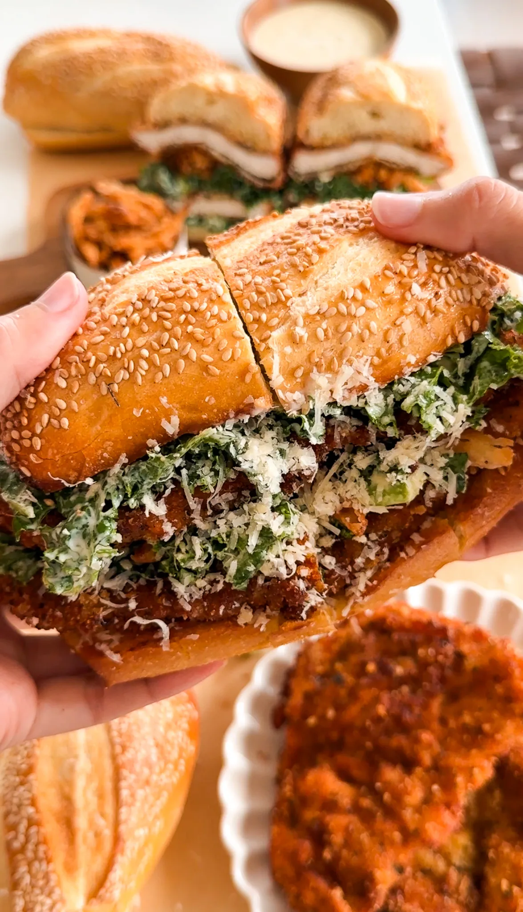

PREP TIME: 15 MINUTES
COOK TIME: 45 MINUTES
TOTAL TIME: 1 HOUR
YIELDS: 2 TO 3 SANDWICHES
Crispy, golden chicken cutlets piled high with creamy Caesar-dressed kale and crunchy fried onions create a sandwich that's pure magic! This playful twist on the classic chicken Ceasar salad transforms it into a truly unforgettable sandwich experience. Each bit is a flavor and texture explosion, and trust me, you'll be dreaming about this sandwich long after it's gone!
Jump To RecipeGet ready to elevate your sandwich game with this crispy, flavor-packed Kale Caesar Chicken Cutlet Sandwich! Inspired by the viral sensation from Liberty Kitchen in Philly, this creation is a delightful combination of crunchy, golden chicken cutlets, creamy Caesar-dressed kale, and crispy fried onions, all nestled between perfectly toasted sesame buns. It's a handheld treat that will leave you craving more!
Let's kick things off with those irresistible crispy onions that add a satisfying crunch to each bite! Start by soaking thinly sliced yellow onions in buttermilk for about 10-15 minutes. This s tep not only enhances the flavor but also helps the flour adhere better when frying. While the onions soak, heat up some vegetable oil in a deep skillet to a sizzling 350°F.
Once the onions are ready, drain them and toss them in a mixture of flour and a sprinkle of salt. Fry them in small batches until they're golden brown and crispy—this usually takes just a few minutes. Be sure to set them aside on paper towels to absorb any excess oil. These crispy gems are the perfect topping that adds texture and flavor to your sandwich!
Now, let's talk dressing! This creamy Caesar dressing is the star of the show, giving your kale that delicious creamy flavor from scratch. In a bowl, combine mayonnaise, buttermilk, lemon juice, Worcestershire sauce, minced garlic, yellow mustard, anchovy paste, dried parsley, and black pepper.
Adjust the seasoning to your liking, and don't forget to fold in some freshly grated parmesan for an extra cheesy kick. You can also add in some pecorino romano if you'd like.
To make this recipe easier, you could always use your favorite store-bought Caesar dressing. You can also make the dressing in advance and store it in a jar in the fridge.
Next up are the chicken cutlets! You can buy pre-thinly sliced chicken breasts from the store to save time, or you can easily prepare them at home. If you choose to cut your own, start with whole chicken breasts and slice them in half horizontally to create thinner cutlets. This helps them cook more evenly and ensures they stay juicy.
Once you have your chicken cutlets ready, pound them to an even thickness for that perfect fry. Setting up a dredging station will make this process a breeze. Start with a bowl of flour for dredging, and then prepare your wet batter by whisking together an egg, Italian seasoning, parmesan, salt, and pepper.
For the dry batter, mix plain breadcrumbs, Panko breadcrumbs, grated parmesan, and a mix of herbs and spices. Dip each chicken cutlet first in the flour, then in the wet batter, and finally coat them in the dry batter. This three-step process ensures a crispy exterior that seals in all that juicy goodness.
Fry the chicken cutlets in hot oil until they are golden and cooked through. The aroma alone will have you drooling! If you're looking to make this healthier, you can air-fry the cutlets instead for a lighter version that still delivers on flavor.
Now for the fun part—assembling your sandwich! Start by tossing fresh, chopped kale with a generous amount of your creamy Caesar dressing until it's well-coated. This will give the kale a flavorful boost, making it a delicious addition to your sandwich.
To assemble, place a crispy chicken cutlet on the bottom half of a toasted bun. Then, pile on the dressed kale and finish with a generous sprinkle of crispy onions. For an extra touch of decadence, shave some fresh pecorino or parmesan over the top before adding another chicken cutlet on top and the other half of the bun. Sprinkle lots of pecorino romano in the sandwich or on the outside for more flavor! I also like to spread some Caesar dressing on both halves of the toasted sesame bun to make the sandwich more saucy. There's nothing worse than a dry sandwich.
If you tried this recipe and loved it, drop by down below and let me know how you liked it with a rating and comment! Feel free to also leave a question there about this recipe and I'll get right back to it.
To see more recipes and behind-the-scenes, follow along on Instagram and Youtube! I'm also now on Pinterest pinning away so stop by and see what's up.
Crispy, golden chicken cutlets piled high with creamy Caesar-dressed kale and crunchy fried onions create a sandwich that's pure magic! This playful twist on the classic chicken Ceasar salad transforms it into a truly unforgettable sandwich experience. Each bit is a flavor and texture explosion, and trust me, you'll be dreaming about this sandwich long after it's gone!
PREP TIME: 15 MINUTES
COOK TIME: 45 MINUTES
TOTAL TIME: 1 HOUR
YIELDS: 2 TO 3 SANDWICHES
CRISPY ONIONS:
CAESAR DRESSING:
CHICKEN CUTLETS
FLOUR BATTER
WET BATTER
DRY BATTER
SANDWICH ASSEMBLY
STEP 1: MAKE THE CRISPY ONIONS
STEP 2: PREPARE THE CAESAR DRESSING
STEP 3: BREAD AND FRY THE CHICKEN CULTLETS
STEP 4: ASSEMBLE THE SANDWICH